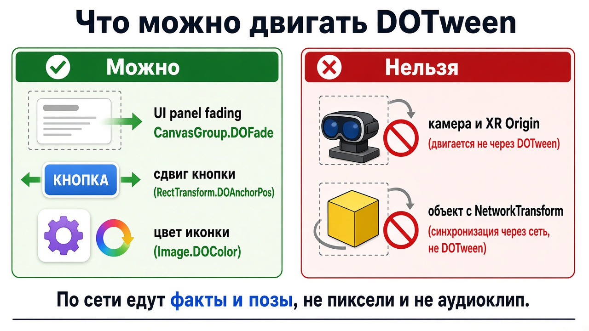
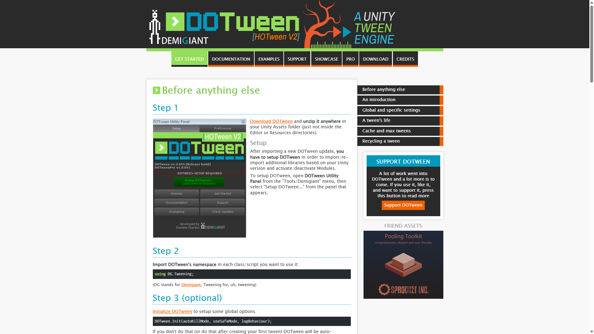

Тетрадь 5 · твой ПК
По сети едут факты и позы, не пиксели и не аудиофайл. Плавно двигается панель. Голова двигается только трекингом.
Ниже восемь вопросов. Под каждым сразу написан ответ.
Ответ
Картинка в VR — два глаза и лимит Quest. Мир в метрах: 1 юнит = 1 метр. Панель перед глазами — Canvas в World Space, не обычный экранный HUD. Полноэкранное размытие и толпа динамических теней роняют кадр. Низкий кадр укачивает сильнее, чем простой материал.
Звук — AudioSource на объекте и один AudioListener на твоей камере.
spatialBlend = 0 — кнопки и музыка, одинаково в обоих ушах.spatialBlend = 1 — предмет в комнате, громкость от расстояния.DOTween доводит число от A до B за время: альфа панели, сдвиг кнопки, цвет иконки. В стартере лобби гаснет корутиной за 0,35 с. CanvasGroup.DOFade делает то же, если пакет установлен и в Utility Panel включён модуль UI. Альфа от 0 до 1, не от 0 до 100. Пока DOTween в проекте нет — рабочий путь это корутина в LobbyHud.


Ответ
Сеть шлёт «куб красный» и «куб стоит тут». Краску каждый шлем считает сам. Поэтому SyncVar нужен на цвет, а не на «текущий кадр шейдера». Постпроцесс, который забыл включить в APK, сам по сети не приедет.
Звук запускай, когда факт уже приехал: в hook или в ClientRpc. Клип лежит в билде у каждого. Гнать wav по сети не надо. Кто зашёл позже, старый выстрел слышать не обязан. Открытую дверь увидеть обязан.
Второй AudioListener глушит или двоит звук так же, как вторая камера ломает картинку. Чужой аватар может быть источником шагов. Слушателя на нём нет.
DOTween крутится отдельно в каждом процессе и про Mirror не знает. Если он двигает куб, а NetworkTransform пишет в тот же transform позу с сервера, куб дёргается. Панель лобби — не сетевой объект, её альфу твинить можно. Твин камеры или XROrigin — фальшивое движение головы.
Твин, который не убили при смене сцены, доигрывает уже в комнате: альфа остаётся 0, кнопки пропадают. В OnDestroy вызови DOKill или при входе в лобби поставь альфу обратно в 1.
Ответ
Ответ
Картинка:
Звук:
maxDistance, чтобы дальний угол не орал.DOTween:
using DG.Tweening;canvasGroup.DOFade(0f, 0.35f);DOKill.Ответ
Ответ
| Что происходит | Где искать |
|---|---|
| Тишина | нет слушателя, пустой клип, громкость 0, источник слишком далеко, второй слушатель |
| Звук только у того, кто нажал, а должны слышать все | клип в локальной кнопке. Нужен RPC или hook |
| Звук слоями даже у тех, кто зашёл позже | Play в Update, хотя SyncVar не менялся |
| Картинка двоится или прыгает | две камеры |
| В шлеме темно, на ПК светло | смотри билд, не только окно Game на ПК |
| Тошнит на переходе | твин или скрипт двигает камеру / Origin |
| Куб дёргается в полёте | DOTween и NetworkTransform вместе |
| DOFade не компилируется | нет пакета или не включён UI-модуль. Пока так — корутина |
| Панель навсегда полупрозрачная | твин оборвался на смене сцены, альфу не вернули в 1 |
Ответ
DOPunchScale на кнопке, когда на неё смотрит луч. Только UI.Ответ